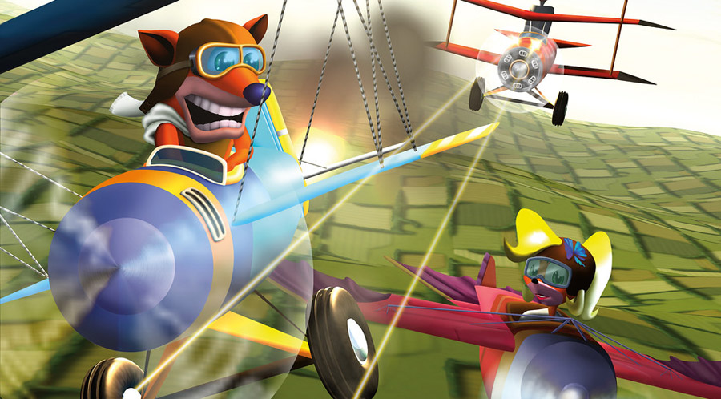
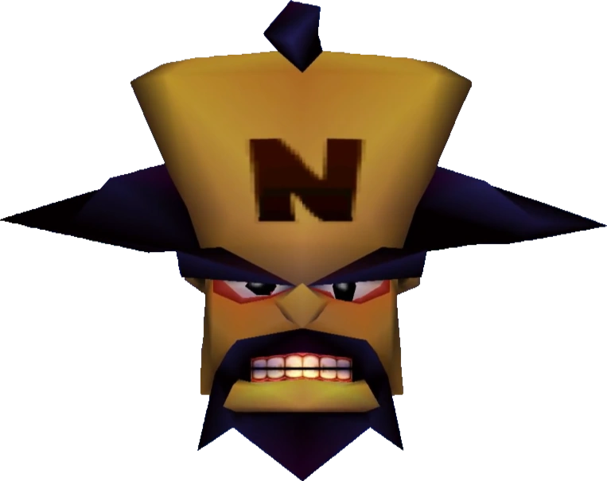

Crash Bandicoot 3: Warped é um jogo eletrônico de plataforma desenvolvido pela Naughty Dog e publicado pela Sony Computer Entertainment. Foi lançado para o PlayStation em 1998. O jogo segue Crash Bandicoot enquanto ele viaja no tempo para coletar cristais e frustrar os planos do vilão Dr. Neo Cortex e do novo antagonista, Uka Uka.
Crash Bandicoot: Warped é o terceiro jogo da série Crash Bandicoot, lançado em 1998 para o PlayStation. Desenvolvido pela Naughty Dog e publicado pela Sony Computer Entertainment, o jogo foi lançado logo após o sucesso de seus dois antecessores, Crash Bandicoot (1996) e Crash Bandicoot 2: Cortex Strikes Back (1997). A equipe de desenvolvimento, liderada por Andy Gavin e Jason Rubin, tinha como objetivo dar continuidade à popularidade da franquia, mas com inovações que expandissem a fórmula de jogabilidade, oferecendo uma experiência mais variada e complexa para os jogadores.
Uma das principais inovações de Crash Bandicoot: Warped foi a inclusão de uma grande diversidade de mundos e cenários. O jogo trouxe uma série de ambientes temáticos, como praias tropicais, castelos medievais e até o período pré-histórico, o que proporcionou uma jogabilidade mais dinâmica e envolvente. Além disso, o título introduziu novos personagens jogáveis, permitindo que os jogadores controlassem personagens como Dr. Neo Cortex, Dingodile e Tiny Tiger em fases especiais, o que trouxe uma variedade adicional à experiência de jogo. Novas mecânicas também foram introduzidas, como o uso de veículos (aviões e motocicletas), bem como novos movimentos para o personagem principal, Crash, como o "super pulo" e o "spin" mais poderoso.
A trilha sonora, composta por Mark Mothersbaugh, também se destacou em Crash Bandicoot: Warped. As músicas foram cuidadosamente criadas para complementar os diferentes cenários e atmosferas dos mundos do jogo, criando uma experiência auditiva imersiva. O design visual do jogo também teve um grande avanço em relação aos títulos anteriores, aproveitando ao máximo as capacidades gráficas do PlayStation, com cenários mais detalhados e animações mais suaves, tornando o jogo visualmente impressionante para a época.
Lançado em novembro de 1998, Crash Bandicoot: Warped recebeu críticas amplamente positivas, com destaque para sua jogabilidade envolvente, variedade de níveis e alta qualidade técnica. O jogo se tornou um dos mais vendidos do PlayStation e ajudou a consolidar a franquia Crash Bandicoot como uma das mais populares e influentes da era dos jogos 3D. Além disso, o sucesso de Warped garantiu que Crash se tornasse um dos maiores ícones do mundo dos jogos de plataforma na década de 90.
O protagonista da série, um bandicoot cativante e destemido. Em Warped, Crash é novamente o herói principal que tenta impedir os planos malignos do Dr. Neo Cortex. Ele é conhecido por suas habilidades acrobáticas e por usar o famoso "spin" (giro) para derrotar inimigos e destruir obstáculos.
O principal vilão da série, Cortex é um cientista louco que busca dominar o mundo. Em Warped, ele tenta usar o poder das "Cristais do Tempo" para alcançar seus objetivos. Embora seja uma ameaça constante, Cortex é também um personagem engraçado e caricato.
Um vilão que aparece em Warped como um aliado de Cortex. Ele é um mestre do tempo e usa suas habilidades para manipular os acontecimentos. N. Tropy é um antagonista inteligente e calculista, que busca controlar o fluxo do tempo para seus próprios fins.

Um personagem híbrido, metade dingo e metade crocodilo. Ele é um dos capangas de Cortex e serve como chefe em algumas fases do jogo. Com uma personalidade excêntrica, Dingodile usa um lança-chamas em combate e tem um estilo bem humorado.
Um dos vilões clássicos da série, Tiny é um tigre imenso e musculoso que serve como um dos capangas de Cortex. Embora seja menos inteligente, ele é extremamente forte e serve como um dos principais desafios para Crash em Warped.

Ele é uma máscara mística e maligna, irmã gêmea de Aku Aku. Ele é o principal vilão, trabalhando ao lado de Dr. Neo Cortex e outros antagonistas para derrotar Crash. Com uma personalidade arrogante e malévola, Uka Uka busca dominar o mundo utilizando seus poderes sobrenaturais e os cristais do tempo. Ele se opõe a Crash e seus amigos, tentando atrapalhar suas aventuras e garantindo que os vilões tenham sucesso em seus planos.